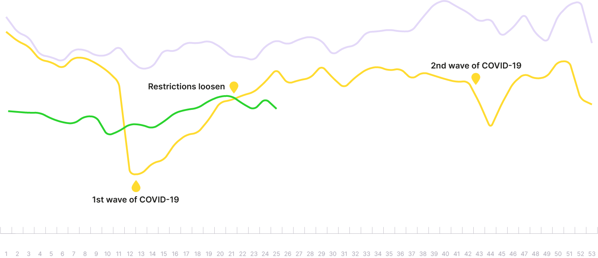
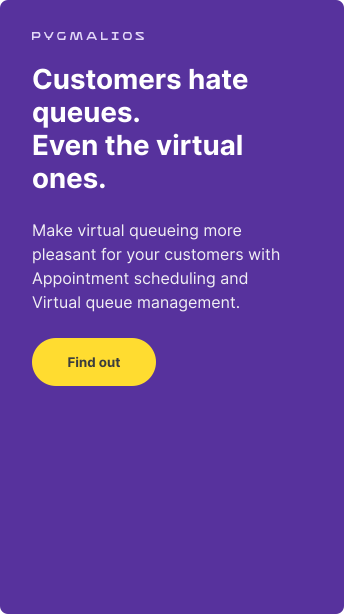

The (R)Evolution of Telecom Retail Store:
A Step into the Future
To become one of the industry leaders in telecom retail, one has to be prepared to take the customer journey to a whole new level, both online and offline. Here are several insights that will inspire you to start on the right foot.
Brought to You by
Key Takeaways
Retail shopping as we know has changed
Testimonials of our telecom partners speak about how COVID-19 forced the industry to innovate and rethink its approach to customer service.
Impact on the day-to-day business was tremendous, but telecom retailers have stood their ground. After having established all necessary health-related precautions, they continued with keeping business afloat.
Service hybridization is one of the ways to manage strain put on the limited personnel due to COVID-19 restrictions. Many of our local telecom partners have opted to start using telesales more. It means employees, who would usually engage in face-to-face communication only, started calling customers on top of their regular responsibilities.
Telecom retail finds itself in a transitional phase. While it might not be possible to walk down to the store in person every time during the year, statistics show a positive future is in the cards for the telecom retail industry - if specific actions are carried out.

The average customer traffic today amounted to approximately 56% of what it used to be in 2019. Compared to customer traffic of 2020, it sits at around 86%. However, there is one thing missing in the statistics, which keeps everyone on their toes - predictability of customer traffic.
Because of this reason alone, the telecom retail industry should focus on real-time data and daily trends. Learning your customers' behavior and needs helps you act upon the learnings quickly and employ adequate measures.


It is time to walk the walk
Accenture found that 25% of customers use the store as a means of evaluating products, 60% use it to ask for advice. Put simply, if your retail store serves as the decision-driving element and the customer orders online, it is still a win. It is an example of an omnichannel approach. It applies to other findings:
- When switching channels, three out of four customers expect to pick up where they left off—not having to re-enter information or re-inform a customer service representative of their issue.
- 70% of customers who start in a retail store convert close in a different channel, getting the physical/digital mix right is essential.
Customers of today expect the top-notch, tailor-made experience to convince them to leave their homes and venture into the store. This process needs to be guided from the very first moment your customer uses any of your contact points. To achieve this, here are three actions to consider:
Omnichannel approach
The most important thing right now seems to be creating a flawless, uninterrupted customer experience so your customer can start or continue from any point of their journey.
One of the crucial milestones in embracing omnichannel is intertwining the physical world with the digital one. Think about creating a local, digital marketing campaign that would target all your customers within the close vicinity to your retail store - offer a special discount on a specific day to fill up less frequented periods during the week, for example. Incentivizing your customers to visit your store on their way from work or during lunch to take care of rudimentary tasks can boost awareness and conversion rate.
One of our telecom clients reported a decrease in motivation and burn-out of the sales consultants as one of the biggest challenges COVID-19 brought so far. Providing employees with incentives that lead to the ability to make them the true retail experts is therefore crucial.
In the omnichannel approach, telecom stores will become part of a seamless network of multiple channels, each underpinned by digital technology. Their synergy lies in the compartmentalization of stores, leading your customer to the one that fits his needs the best.
One of the stores can serve as a pick-up point with speedy and convenient service while the other one can act as a showroom with upselling capabilities. This will require rethinking the store’s strategy in customer engagement and the format of the store itself.
formats
Classic
A full-service store that keeps a whole portfolio of products.
Convenient
Adjusted to mainly serve local clientele and manage urgent requests with limited offerings.
Express Pickup
Customers can pick up their online orders or book a free appointment with a representative.
Experiental Showroom
Offers new and innovative ways for customers to experience and engage with products.
Pop-up
Manned or unmanned, this type of a store changes locations and drives brand awareness.
Pop-in
Creates potential for new traffic by operating in another brand's store or a department store.
Kiosk
Self-service machines that are designed for quick transactions and on-the-go products.
Furthermore, an omnichannel approach is not just about the experience within your store but about the process as a whole - outside of your store boundaries included. Deliveries outside matter as much so do not keep your customers waiting. More than 90% of customers view 2-3 days deliveries as the baseline, and 30% expect the same-day delivery.
Personalization
When preparing all the different touchpoints (digital screens, kiosks, tablets or app downloads) for your customers, make them a part of the dialogue. Transforming the in-store experience should evoke emotion and make it relatable for your everyday consumer. How can this be done?
Physical stores will never be as fast and convenient as their online counterparts. However, one can learn from the other and vice versa. The physical store should introduce comfort and a more streamlined experience for the customer while the presence of actual employees at the store reinforces the decision-making process with a personal touch.
The in-store customer journey is often not personalized, which leads to lost conversion opportunities.
Pre-visit
(awareness)
Telecom window displays are usually generic without any targeted display advertisements.
During the visit
(conversion)
Upon arrival at the generic entrance, the customer is not immediately recognized and so their journey cannot be personalized.
Browsing behavior is not tracked and no data is collected to help generate recommendations.
Post-visit
(targeting)
If no transaction or conversion takes place, then no data is collected, and the telecom retailer may not acknowledge the customer’s presence.
If a transaction or conversion occurs, the telecom retailer acknowledges the customer only at the end of their visit.
83 percent of customers
say they want their shopping experience to be personalized in some way, and research by
McKinsey
suggests that effective personalization can increase store revenues by 20 to 30 percent.
Keep contextual and location data in your sights as well. Prompting the customer to self-identify during the visit should be done as openly as possible - asking for an email address or a phone number, with a tangible benefit in return. These benefits can range from personalized offers and discounts to free service for convenience such as free phone charging on the spot and more.
It’s also a good practice to have special promotions at the ready, exclusively for your store’s visitors to further incentivize their effort. This will enable you to target specific audiences with relevant messages and offers whenever they take a step inside your retail store.
Pre-visit
(awareness)
Incentivize customers to visit by a local marketing campaign within the walking distance to the store.
Send personalized ads based on the type of current offering.
During the visit
(conversion)
Make use of a mobile app for in-store guidance and digital experiences.
Track customer behavior in store and offer recommendations based on their location within the store.
Utilize sales consultants to guide the customer while browsing and make suggestions based on purchase history.
Post-visit
(targeting)
Target the customer with a follow-up content and create the opportunity for upsell by personalizing product or service offerings.
Nourish your customer’s loyalty by avoiding generic, default information and build personalized promotional materials and recommendations that will make their journey feel special.
Studies
show customer loyalty should be at the forefront of priorities and special upsell and rewards programs can contribute to increased consumer spending.
Digitalization
With COVID-19 looming in the distance, the game strongly favors the online landscape. To even the odds, telecom retail stores must embrace digital technology, rather than compete with it.
The importance of digitalization in the telecom retail stores of the future is twofold. For one, digital touchpoints enable the customers to continue where they left off. Second, interacting with digital screens, kiosks, tablets, and downloading apps are not only great ways to stay in touch and keep the flow uninterrupted but also means of gathering vital information on your customer's likings and shopping behavior.
Removing friction in the decision-making process - digitalization can also help reduce queueing up in stores. Online appointment scheduling for store visits has been adopted by a large number of telecom providers already and we have been hard at work to provide the same service to our partners as well.

Workforce optimization provides your employees with opportunities for a better work-life balance with apps that will generate monthly work schedules based on prediction from traffic, sales, and employee-specific data. The staff can earn a premium by taking up a hard-to-fill shift or proactively reacting to a busy period within the company. This will ultimately contribute to more satisfied personnel and eventually, better customer service.
How do you see the future of telecom retail shopping?
For starters, we recommend starting small, introducing incremental changes to ease your customers into the new world of telecom retail stores. Focus on real-time data, use it to prepare strategies that will woo more customers towards your brand, and build strong bonds with an omnichannel approach.
The Telecom retail industry is changing. Take your customers along for the ride and show them you care by personalizing their journey and making it more convenient by embracing new digital technologies.